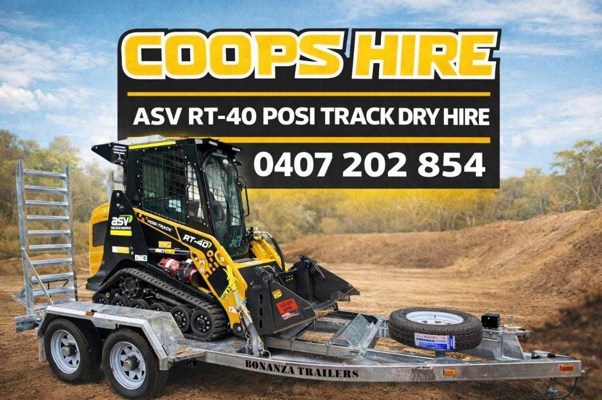

ASV RT-40 posi track
Powerful, compact and easy to run — the right machine for tight-access jobs.
The machine
The ASV RT-40 posi track — the compact workhorse for digging, levelling and clearing.
Powerful, compact and easy to run — the right machine for tight-access jobs.
Delivered to your site, or pick it up yourself from Salt Ash.
Well-maintained equipment that starts first time, every time.
Hire by the day — your operator, your schedule, your job.
Call Scott to check availability and lock in your dates.
Servicing Newcastle, Port Stephens, Maitland and the Hunter.
How it works
Simple hire, no runaround.
01
Call or message Scott with your dates and what the job needs.
02
Lock in your hire — daily rates, straightforward terms.
03
Collect from Salt Ash, or arrange delivery to your site.
04
The RT-40 does the heavy lifting — you stay on schedule.
Why Coops Hire
Servicing Newcastle, Port Stephens, Maitland and surrounding areas.
Convenient collection, or delivery arranged to your site.
The RT-40 is looked after so it works when you need it.
One point of contact from booking to drop-off.

Coops Hire — ASV RT-40 posi track dry hire.
Service areas
Need it delivered? Call Scott on 0407 202 854 to arrange.